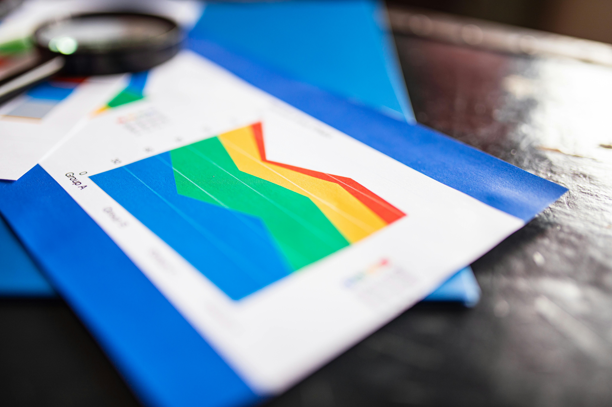
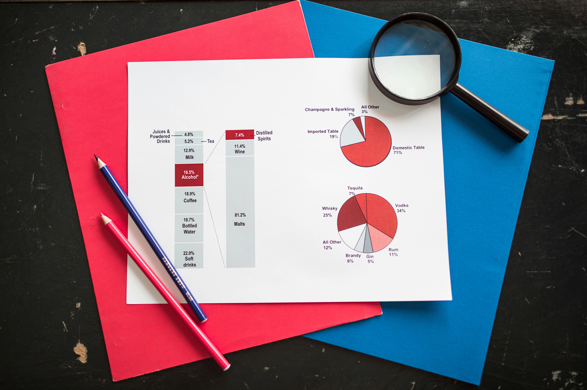

Research · Analytics · AI Solutions — Nairobi, Kenya
Stadi is a research and analytics firm at the intersection of applied research, advanced analytics and AI-enabled data solutions — turning evidence into action for development partners and private enterprises.
Founded on a commitment to rigorous, context-sensitive research — evolved into a full-spectrum research, analytics, evaluation and technology firm.
We help development partners and private entities make sense of their data — and act on it. From baseline surveys and evaluations to intelligent data systems, we deliver the full evidence-to-action pipeline.
Our work spans social development, education, agriculture, public health, financial services, climate resilience and urban planning — always anchored in evidence, always oriented toward impact.
Baseline surveys, impact assessments and M&E frameworks that generate credible evidence.
→ 02Statistical and machine-learning analysis that turns raw data into patterns and predictions.

Intelligent systems that automate, monitor and alert — putting AI to work for your organisation.
→ 04Web and mobile applications, live dashboards and data platforms for decision-makers.

Market research, segmentation, competitive analysis and operational analytics for growth.
→ 06Hands-on programmes in research methods, data tools, M&E and AI applications.


We design and implement baseline surveys, mid-term, outcome and impact assessments of policy, projects and programmes — with sampling strategies and quality assurance that stand up to scrutiny.
We develop the M&E frameworks, indicators and work plans that drive evidence-based decision making across sectors.
Research & evaluation →We build custom software — interactive dashboards, data platforms and tailored web and mobile applications that transform research into operational tools.
Our engineering team pairs domain expertise with modern tooling to ship reliable products that put insights into the hands of the people who need them.
Solutions & applications →Rigorous research, M&E frameworks and data-driven policy insights for public sector and development organisations.
Baseline surveys, impact assessments and analytical solutions that drive sustainable agricultural development.
Business analytics, customer insights and predictive models that power strategic growth for financial institutions.
Health systems research, epidemiological analysis and programme evaluations that inform better care delivery.
Every solution we propose, we have built. Every method we recommend, we have tested.
Machine learning models are helping smallholder farmers and NGOs anticipate seasonal yield gaps before they occur.
Read more →A practical guide to sampling strategy, questionnaire design and data quality assurance for M&E practitioners.
Read more →Why organisations that invest in purpose-built data platforms see faster decisions and better programme outcomes.
Read more →Whether you are launching a programme, entering a market or building a data product from scratch — Stadi is your end-to-end partner.